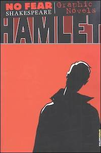
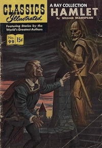
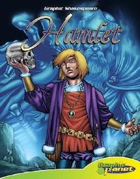
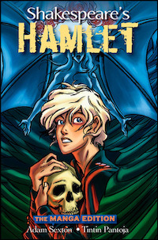

About BARDS
BARDS Creators
Dr Michael Cop is a Lecturer in the Department of English and Linguistics at the University of Otago. His current areas of research are student literacy, digital humanities, and early modern narrative techniques.
Dr David Large is a Research Fellow in the Department of English and Linguistics at the University of Otago where he collaborates on digital educational resources and teaches papers in writing and graphic novels. His current research areas relate to virtual and augmented reality, recurrent neural network fiction, corporate science fiction and methods of annotation.
Thanks
We thank the two sources of funding that made the BARDS project possible:
The 2018 University of Otago Seed Funding Grant and
The 2019 University of Otago Teaching and Learning Grant
We would also like to thank Associate Professor Shef Rogers and Nicola Cummins for their support in shaping the grant applications and for shaping the pedagogical material.
We thank the attendees of the 2019 ANZAMEMS Conference (Australian and New Zealand Association for Medieval and Early Modern Studies) in Sydney, Australia, for their helpful feedback and beta-testing.
Graphic Novels
While we have used excerpts from four graphic novels for this educational project, we encourage people to support those graphic artists and publications:
   
Babra, Neil. No Fear Shakespeare: Hamlet. New York: Spark, 2008.
Blum, A. A. “Hamlet by William Shakespeare”. Classics Illustrated. Newbury: CCS, 2018.
Dunn, Rebecca. William Shakespeare’s Hamlet. Edina, MN: ABDO, 2009.
Sexton, Adam. Shakespeare’s Hamlet: the Manga Edition. Hoboken: Wiley, 2008.
Acknowledgements / Prior Art
We acknowledge that we have made use of Willian Carvalho’s 2012 project ‘comicgen’, from which BARDS was forked. Following testing and reporting in 2019, the full source of BARDS will be made available to the public for educational use.